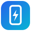

Wi-Dex
Radni prostor
Spreman za povezivanje
Wi-Dex fullscreen
F11
App fullscreen (phone screen only):
in the top bar or
F10
Settings
Help and shortcuts
Telefon
Igre i aplikacije
Mapiranje tastera
Povezivanje
Podešavanja
Pomoć
Telefon nije povezan
Nije povezano
Prikaži i sistemske aplikacije
Isklj.
--
--
--
00:00
Zvuk telefona
Jačina zvuka na računaru
100%
Jačina zvuka